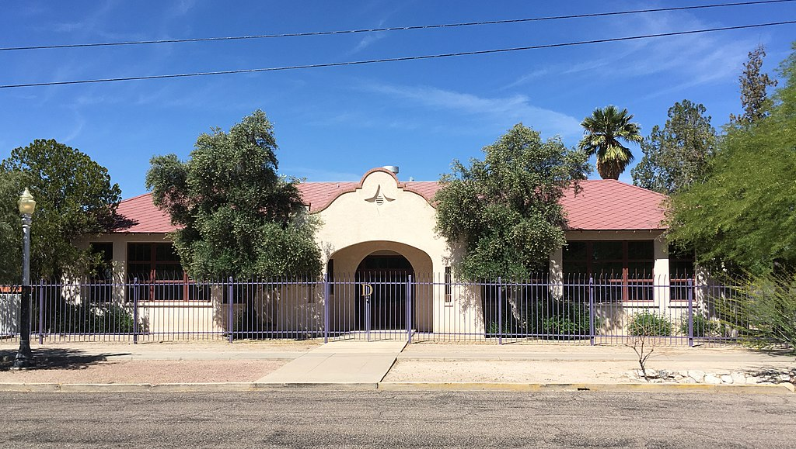

Welcome to The Dunbar Project Website
Dunbar School was completed in January 1918, for the purpose of educating Tucson's African-American students. The school was named after Paul Laurence Dunbar a renowned African-American poet. African-American children in first through ninth grades attended Dunbar until 1951